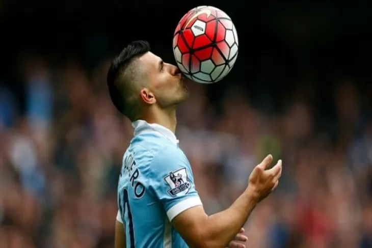

Barcelona Ikut-Ikutan Incar Cristiano Ronaldo
Agen Cristiano Ronaldo, Jorge Medes telah melakukan pembicaraan dengan Presiden Barcelona Joan Laporta mengenai kemungkinan pemain asal Portugal tersebut bergabung Blaurana, Selasa 5 Juli 2022. Cristiano Ronaldo telah mengabarkan kepada para petinggi Manchester United, bahwa ia ingin meninggalkan Old Trafford pada musim ini. Pemain 37 tahun tersebut tidak meyakini MU dapat bersaing dengan tim lain dalam mendatangkan gelar juara. Cristiano Ronaldo tidak ingin menghabiskan satu musim bersama Manchester United tanpa bermain di Liga Champions. Selain itu juga, ia telah melewatkan latihan pramusim yang sudah digelar pada Senin lalu, setelah diberikan izin tinggal di Portugal karena masalah keluarga.
Populer

Manchester City Ke Perempat Final Liga ChampionsCopyright © 2022. All Rights Reserved.